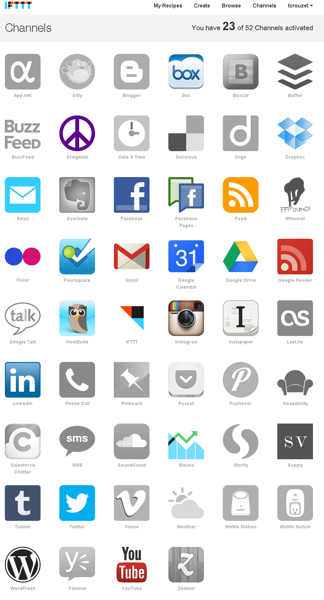
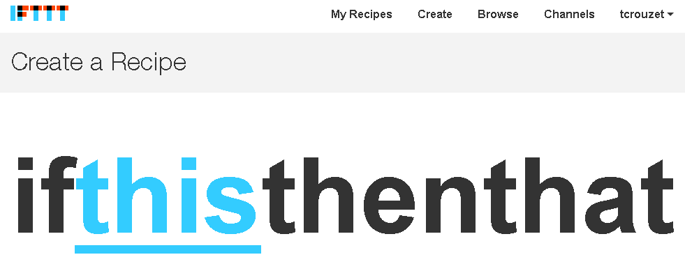
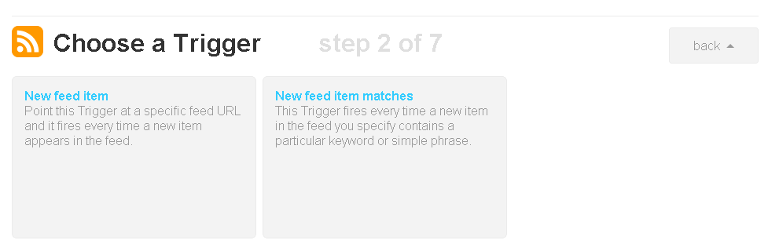
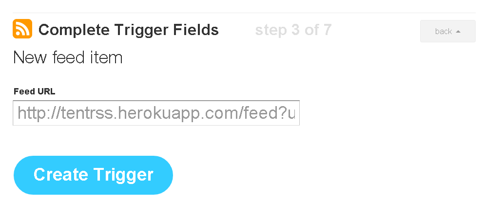
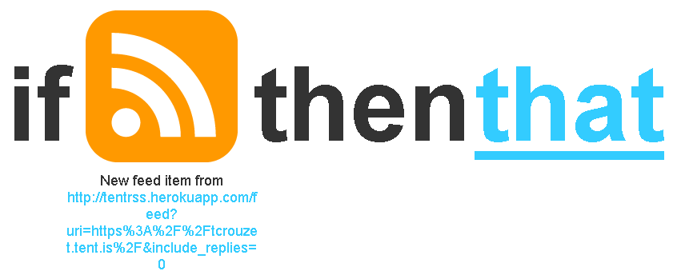
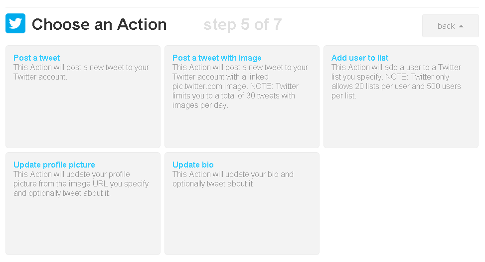
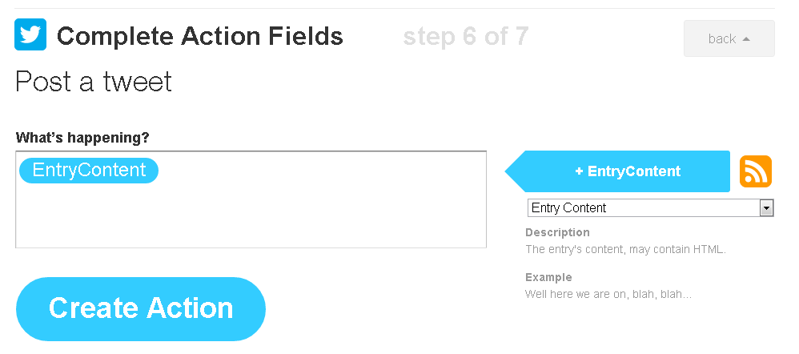
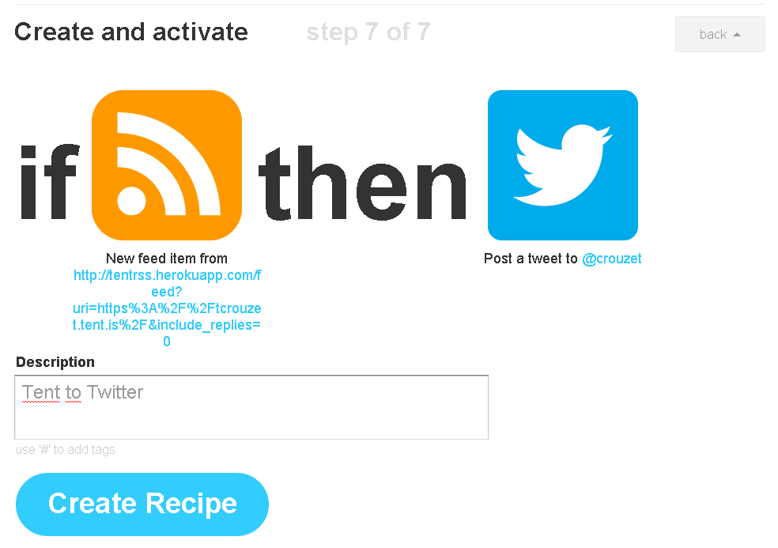
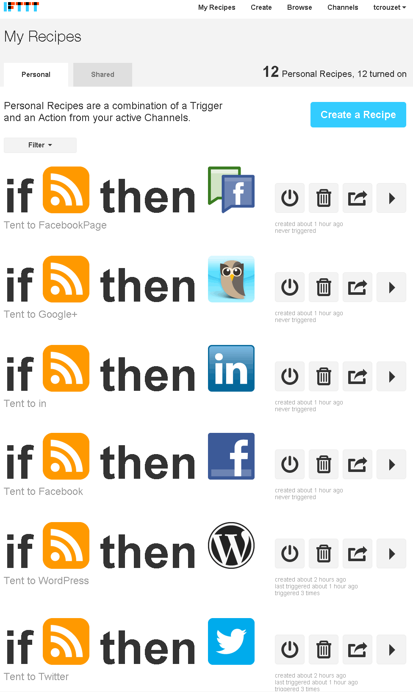

Libérez votre présence en ligne – Mode d’emploi
Dès à présent, je quitte Facebook et Twitter, mais sans réellement disparaître. J’ai tout simplement déplacé l’endroit où je m’exprime socialement en ligne.
Depuis longtemps, je ne poste plus mes messages depuis les réseaux sociaux eux-mêmes mais depuis HootSuite, une façon de ne pas subir la dictature publicitaire, ni même la forme donnée à ces services par leurs opérateurs.
J’ai décidé d’aller plus loin. Puisque je pense que les réseaux centralisés sont un danger pour le Net, et je dis carrément pour la démocratie, je ne peux continuer à y vivre au détriment des endroits plus libres et plus politiquement acceptables qui naissent en ce moment.
À ce jour, j’ai décidé de développer ma vie sociale sur Tent, un réseau social décentralisé et ouvert en cours de développement. Pour autant, je ne veux pas me retrouver en tête à tête avec quelques early-adopters. Facebook, Twitter, Google+… existent, je ne peux le nier. Je vais juste y publier un miroir de mon activité sur Tent. J’entends déjà des grincheux qui disent que c’est compliqué, c’est surtout long à expliquer, et c’est le prix de la liberté.
Marche à suivre
- Créer un compte Tent
- Créer un fil RSS de son activité sut Tent grâce à un service tiers. L’URL du flux a la forme http://tentrss.herokuapp.com/feed?uri=https%3A%2F%2Ftcrouzet.tent.is%2F&include_replies=0, où vous remplacez tcrouzet par votre pseudo.
- Créer des règles de cross-posting grâce à IFTTT. Pour ma part, je renvoie tous mes posts Tent sur Twitter, Facebook, ma page Facebook, Google+, Linklin, mon lifestream sur mon blog…
IFTTT
C’est le service le plus génial apparu depuis longtemps sur le Net.
- Après avoir créé un compte, associez-lui les réseaux sociaux et
autres outils auxquels vous êtes inscrit. Vous ouvrez ainsi des
« Channels ».

- Vous pouvez alors créer des « Recipes » qui on la
forme « If This Then That », d’où le nom du service
IFTTT, si ça fait ça.

- Cliquez sur « This ». Choisissez alors un
« Trigger Channel », c’est-à-dire un de vos services qui
déclenchera une action. Dans le cas de Tent, il faut choisir
« Feed ». L’idée, chaque fois qu’un nouvel article
apparaîtra dans le fils RSS, une action sera déclenchée.

- Cliquez sur « New feed item », indiquez l’adresse du
fil RSS, puis cliquez sur « Create Trigger ».

- La première étape est terminée. Il s’agit de s’occuper du That.
-

- Vous devez cette fois choisir le « Channel » où
l’action se produira. Par exemple, Twitter, et choisir ce qui se
produira, par exemple l'envoie d'un tweet avec « Post a
tweet ».

- Personnalisez le message à l’aide de champs, ajoutez des
hashtags, des textes libres… Pour terminer, cliquez sur
« Create Action ».

- Reste à décrire la recette et à cliquer sur « Create
recipe ». À partir de cet instant, vos posts Tent se
retrouveront sur Twitter après cinq minutes environ.

- Il vous reste plus qu’à créer des règles pour les autres
réseaux sociaux. Pour Google+, je passe à travers le channel
HootSuite (j'aurais pu aussi bien envoyer tous les messages à
travers HootSuite, mais j'ai préféré écrire des recettes sur mesure
pour chacun des réseaux).

PS : Toute cette manip n'empêche pas les réseaux sociaux d'être mortellement chiant en ce moment. Elle règle le problème politique, pas le problème esthétique.
Suite | 2012 | Sommaire | Texte publié mercredi 10 octobre 2012